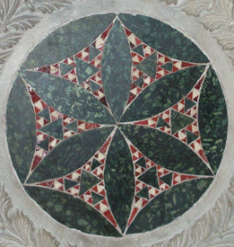

| The intricate decoration of Gothic, Renaissance, and Baroque architecture,
especially as expressed in cathedrals, frequently exhibited scaling over several
levels. |
On the left, the central window is an arch made of two arches, each of
which is made of two still smaller arches. This construction a stone tracery
of interlocked arches, was developed in
Gothic architecture to strengthen windows agains the pressure of wind. |
In the middle note the spires
surrounded by spires surrounded by spires. |
What fractal patterns can you find
on the right? |
| Click each picture to enlarge in a new window. |
|
| Why is repetition across scales common in the architecture of
these periods? |
Were the builders informed by the fractal aspects of Nature? |
Perhaps the hierarchical arrangement of features was meant to represent
theological hierarchies. |
Or perhaps the fact that the pointed arch, developed in Gothic cathedrals, allowing the
vault to be adapted to any area, put scale-invariance into the architects' minds. |
| This decoration from the Basilica di San Clemente may look familiar. Click for
an enlargement in a new window. |
|
 |